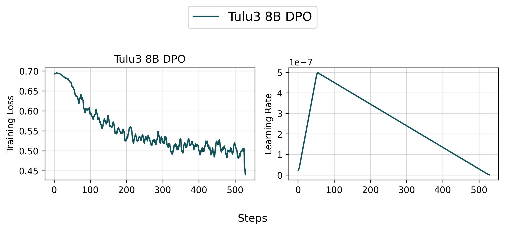
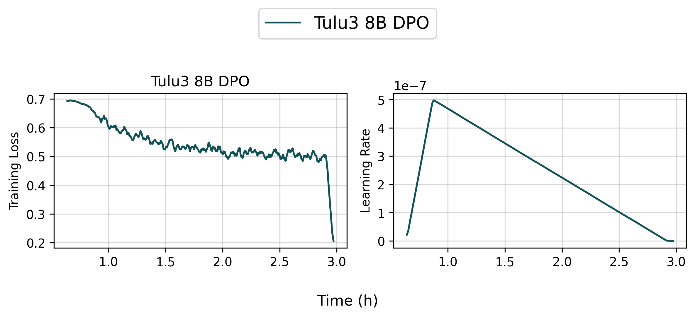
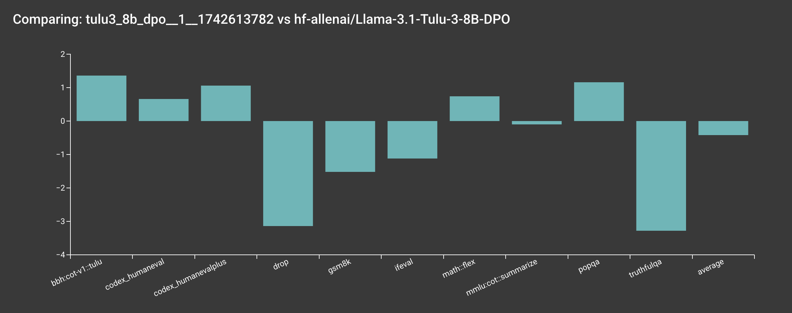
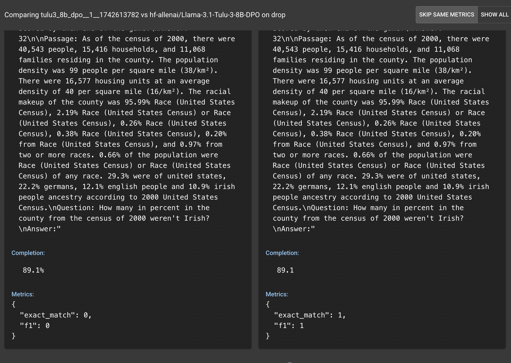
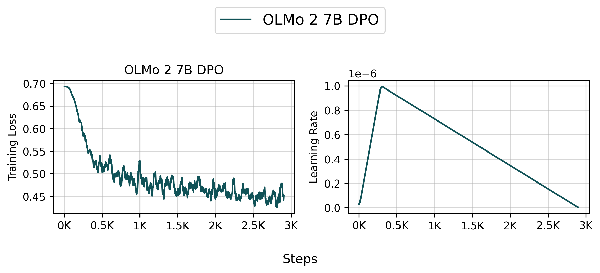
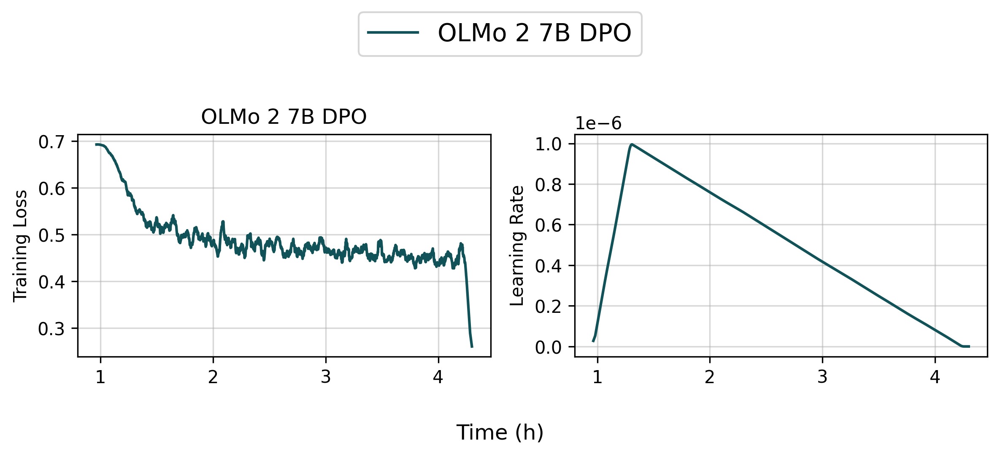
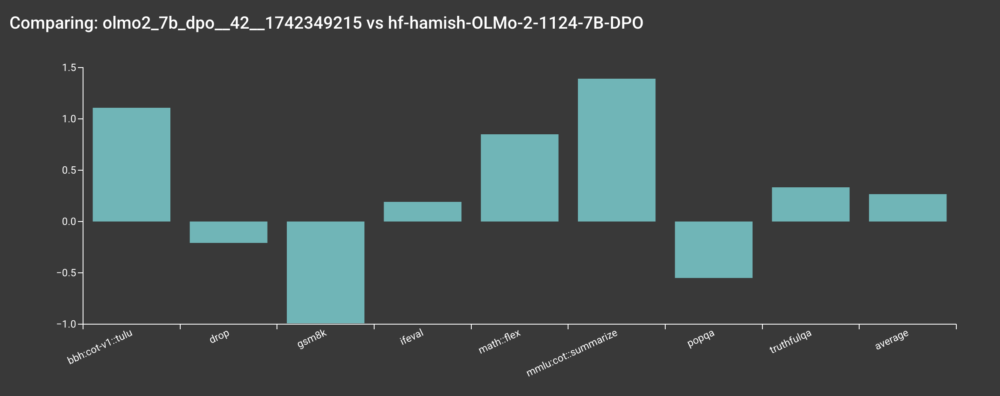
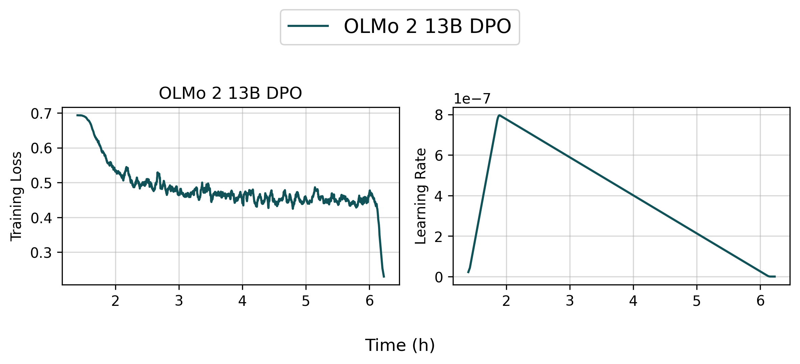
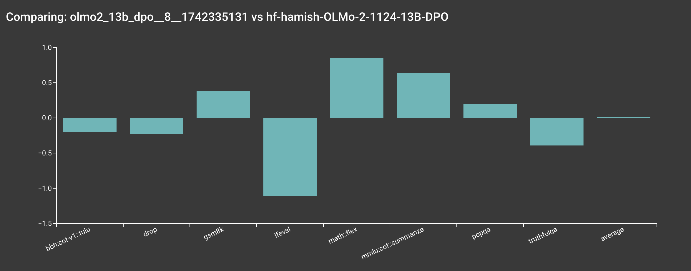

Direct Preference Optimization (DPO)
We support Direct Preference Optimization (DPO) training on a variety of datasets.
Implemented Variants
dpo.py(recommended) is the DPO implementation built on OLMo-core's native training infrastructure (FSDP). It supports tensor parallelism, sequence packing, andtorch.compile.dpo_tune_cache.pyimplements the same DPO algorithm asdpo.pybut uses DeepSpeed instead of OLMo-core.dpo.pyshould be more efficient and easier to debug; prefer it for new work.
dpo.py (OLMo-core)
Debug Scripts
| Script | Scale | Description | Launch |
|---|---|---|---|
scripts/train/debug/dpo/local.sh |
1 GPU, local | Quick local test with OLMo-2-0425-1B. No Beaker required. | bash scripts/train/debug/dpo/local.sh |
scripts/train/debug/dpo/single_gpu.sh |
1 GPU, Beaker | Single-GPU smoke test on Beaker with OLMo-2-0425-1B. | ./scripts/train/build_image_and_launch.sh scripts/train/debug/dpo/single_gpu.sh |
scripts/train/debug/dpo/multi_node.sh |
2 nodes (16 GPUs), Beaker | Multi-node test with OLMo-2-1124-7B. Exercises FSDP sharding, tensor parallelism, packing, and profiling. | ./scripts/train/build_image_and_launch.sh scripts/train/debug/dpo/multi_node.sh |
Olmo 3 Scripts
| Script | Scale | Description | Launch |
|---|---|---|---|
scripts/train/debug/dpo/7b_instruct_dpo_olmo_core.sh |
2 nodes (16 GPUs), Beaker | Debug script for Olmo 3 7B DPO with a multi-dataset mixer. | ./scripts/train/build_image_and_launch.sh scripts/train/debug/dpo/7b_instruct_dpo_olmo_core.sh |
scripts/train/olmo3/7b_instruct_dpo_olmocore.sh |
4 nodes (32 GPUs), Beaker | Production Olmo 3 7B Instruct DPO (OLMo-core). | ./scripts/train/build_image_and_launch.sh scripts/train/olmo3/7b_instruct_dpo_olmocore.sh |
scripts/train/olmo3/7b_instruct_dpo.sh |
4 nodes (32 GPUs), Beaker | Production Olmo 3 7B Instruct DPO (DeepSpeed/legacy). | ./scripts/train/build_image_and_launch.sh scripts/train/olmo3/7b_instruct_dpo.sh |
scripts/train/olmo3/7b_think_dpo.sh |
4 nodes (32 GPUs), Beaker | Olmo 3 7B Think DPO. | ./scripts/train/build_image_and_launch.sh scripts/train/olmo3/7b_think_dpo.sh |
scripts/train/olmo3/32b_instruct_dpo.sh |
8 nodes (64 GPUs), Beaker | Olmo 3 32B Instruct DPO. | ./scripts/train/build_image_and_launch.sh scripts/train/olmo3/32b_instruct_dpo.sh |
scripts/train/olmo3/32b_think_dpo.sh |
16 nodes (128 GPUs), Beaker | Olmo 3 32B Think DPO. | ./scripts/train/build_image_and_launch.sh scripts/train/olmo3/32b_think_dpo.sh |
Key Flags
| Group | Flag | Description | Default |
|---|---|---|---|
| Experiment | --exp_name |
Name of this experiment | "dpo_experiment" |
--run_name |
Unique run name (for W&B) | None |
|
--seed |
Random seed for initialization and dataset shuffling | 42 |
|
| Model | --model_name_or_path |
Model checkpoint for weight initialization | — |
--attn_backend |
Attention backend: flash_2, flash_3, auto |
auto |
|
--model_revision |
Specific model version (branch, tag, or commit) | None |
|
--config_name |
Pretrained config name or path if different from model | None |
|
| DPO Algorithm | --beta |
Beta parameter for DPO loss | 0.1 |
--loss_type |
Loss type: dpo, dpo_norm, simpo, wpo |
dpo |
|
--gamma_beta_ratio |
Gamma to beta ratio for SimPO loss (unused for DPO) | 0.3 |
|
--label_smoothing |
Label smoothing for DPO/SimPO loss | 0.0 |
|
--packing |
Use packing/padding-free collation | False |
|
--concatenated_forward |
Concatenate chosen and rejected in one forward pass | True |
|
--load_balancing_loss |
Include load balancing loss (for OLMoE) | False |
|
--load_balancing_weight |
Weight for load balancing loss | 0.001 |
|
| Training | --learning_rate |
Initial learning rate | 2e-5 |
--num_epochs |
Total number of training epochs | 2 |
|
--max_train_steps |
If set, overrides num_epochs |
None |
|
--per_device_train_batch_size |
Batch size per GPU | 8 |
|
--gradient_accumulation_steps |
Gradient accumulation steps | 1 |
|
--max_seq_length |
Maximum sequence length after tokenization | 2048 |
|
--warmup_ratio |
Linear warmup fraction of total steps | 0.03 |
|
--weight_decay |
Weight decay for AdamW | 0.0 |
|
--max_grad_norm |
Maximum gradient norm for clipping (-1 = no clipping) | -1 |
|
--lr_scheduler_type |
LR scheduler: linear, cosine, constant |
linear |
|
--compile_model |
Apply torch.compile to model blocks |
True |
|
--activation_memory_budget |
Activation checkpointing budget (0.0–1.0) | 1.0 |
|
--optimizer_type |
Optimizer type: adamw or muon |
adamw |
|
--optimizer_kwargs |
Extra kwargs for optimizer (e.g., '{"mu": 0.95}' for Muon) |
{} |
|
--fused_optimizer |
Use fused AdamW | True |
|
--use_8bit_optimizer |
Use 8-bit optimizer from bitsandbytes | False |
|
--sync_each_batch |
Sync grads every batch during grad accumulation (reduces memory) | False |
|
--cache_logprobs_only |
Exit after building reference logprobs cache | False |
|
--timeout |
Timeout for training process in seconds | 1800 |
|
| Parallelism | --tensor_parallel_degree |
Tensor parallelism degree | 1 |
--context_parallel_degree |
Context parallelism degree | 1 |
|
--fsdp_shard_degree |
FSDP shard degree (None = auto) |
None |
|
--fsdp_num_replicas |
Number of FSDP replicas (None = auto) |
None |
|
| Data | --mixer_list |
List of datasets (local or HF) to sample from | — |
--mixer_list_splits |
Dataset splits for training | ["train"] |
|
--chat_template_name |
Chat template to use | None |
|
--transform_fn |
List of transform functions to apply to the dataset | — | |
--cache_dataset_only |
Exit after caching the dataset | False |
|
--skip_cache |
Skip dataset caching | False |
|
| LoRA | --use_lora |
Use LoRA for parameter-efficient training | False |
--lora_rank |
Rank of LoRA | 64 |
|
--lora_alpha |
Alpha parameter of LoRA | 16 |
|
--lora_dropout |
Dropout rate of LoRA | 0.1 |
|
| Checkpointing | --output_dir |
Output directory for checkpoints | output/ |
--checkpointing_steps |
Save every N steps or epoch |
500 |
|
--keep_last_n_checkpoints |
How many checkpoints to keep (-1 for all) | 3 |
|
--resume_from_checkpoint |
Resume from checkpoint folder | None |
|
| Logging | --with_tracking |
Track experiment with Weights and Biases | False |
--logging_steps |
Log training loss every N steps | None |
|
--wandb_project |
W&B project name | "open_instruct_internal" |
|
--wandb_entity |
W&B entity (team) name | None |
|
| Hub | --push_to_hub |
Upload saved model to HuggingFace | True |
--hf_entity |
User or org name of the model repository | None |
|
--hf_repo_id |
ID of the saved model in HF Hub | None |
|
| Eval | --try_launch_beaker_eval_jobs |
Launch Beaker evaluation jobs after training | True |
--oe_eval_tasks |
Beaker evaluation tasks to launch | None |
dpo_tune_cache.py (Legacy)
dpo_tune_cache.py uses DeepSpeed instead of OLMo-core FSDP. It accepts all the same flags as dpo.py above, with the following differences:
Additional flags (not in dpo.py):
| Group | Flag | Description | Default |
|---|---|---|---|
| DeepSpeed | --zero_stage |
DeepSpeed ZeRO stage (0, 1, 2, or 3) | — |
--offload_optimizer |
Offload optimizer states to CPU | False |
|
--offload_param |
Offload parameters to CPU (only with ZeRO stage 3) | False |
|
--zero_hpz_partition_size |
Hierarchical partition size for ZeRO stage 3 | 8 |
|
| Optimization | --use_liger_kernel |
Use LigerKernel for optimized training | False |
--use_qlora |
Use qLoRA (initializes model in quantized form) | False |
|
--dpo_use_paged_optimizer |
Use paged optimizer from bitsandbytes | False |
Flags not applicable (ignored by dpo_tune_cache.py): --attn_backend, --tensor_parallel_degree, --context_parallel_degree, --fsdp_shard_degree, --fsdp_num_replicas, --compile_model.
Implementation details:
- To save memory,
dpo_tune_cache.pycaches the logprobs of the reference model on the dataset, then removes the reference model from memory. The initial training losses won't appear until the logprobs are computed. - It uses the
dpo_normloss type by default, which is a length-normalized loss. See the SimPO paper for more details.
Debug Scripts
| Script | Scale | Description | Launch |
|---|---|---|---|
scripts/train/debug/dpo_integration_test.sh |
1 GPU, Beaker | Single-GPU integration test with Qwen3-0.6B. | ./scripts/train/build_image_and_launch.sh scripts/train/debug/dpo_integration_test.sh |
scripts/train/debug/dpo/multi_node_cache.sh |
2 nodes (16 GPUs), Beaker | Multi-node test with Qwen3-0.6B and DeepSpeed Stage 3. Tests checkpointing. | ./scripts/train/build_image_and_launch.sh scripts/train/debug/dpo/multi_node_cache.sh |
scripts/train/debug/dpo/checkpoint_integration_test.sh |
2 nodes, Beaker | Two-run checkpoint resume test: trains 1 epoch, then resumes and trains 2 more. | ./scripts/train/build_image_and_launch.sh scripts/train/debug/dpo/checkpoint_integration_test.sh |
Reproduce allenai/Llama-3.1-Tulu-3-8B-DPO (4 Nodes)
You can reproduce our allenai/Llama-3.1-Tulu-3-8B-DPO model by running the following command:
bash scripts/train/tulu3/dpo_8b.sh


👉 Tracked WandB Experiments (Click to expand)
Info
Based on our internal evaluation, the DPO model is roughly on par with the original allenai/Llama-3.1-Tulu-3-8B-DPO model, though there are some slight differences. Note that your results may vary slightly due to the random seeds used in the training.

For example, DROP is lower than the reference, but DROP can be quite brittle due to parsing issues (see below).

Info
We haven't quite figured out how to make our internal evaluation toolchains more open yet. Stay tuned!
Reproduce allenai/OLMo-2-1124-7B-DPO (4 Nodes)
You can reproduce our allenai/OLMo-2-1124-7B-DPO model by running the following command:
bash scripts/train/olmo2/dpo_7b.sh
Info
If you are an external user, mason.py will print out the actual command being executed on our internal server, so you can modify the command as needed.


👉 Tracked WandB Experiments (Click to expand)
Info
Based on our internal evaluation, the DPO model is roughly on par with the original allenai/OLMo-2-1124-7B-DPO model, though there are some slight differences. Note that your results may vary slightly due to the random seeds used in the training.

Info
We haven't quite figured out how to make our internal evaluation toolchains more open yet. Stay tuned!
Reproduce allenai/OLMo-2-1124-13B-DPO (4 Nodes)
You can reproduce our allenai/OLMo-2-1124-13B-DPO model by running the following command:
bash scripts/train/olmo2/dpo_13b.sh

👉 Tracked WandB Experiments (Click to expand)
Info
Based on our internal evaluation, the DPO model is roughly on par with the original allenai/OLMo-2-1124-13B-DPO model, though there are some slight differences. Note that your results may vary slightly due to the random seeds used in the training.

Info
We haven't quite figured out how to make our internal evaluation toolchains more open yet. Stay tuned!
Training Metrics
During training, the following metrics are logged:
training_step: Current training steplearning_rate: The current learning rate from the learning rate schedulerepoch: Current epoch (as a fraction of total dataset)train_loss: The average training loss over the logged stepslogps/chosen: Average log probabilities for chosen responseslogps/rejected: Average log probabilities for rejected responses
For DPO and DPO-norm loss types, additional metrics are logged:
rewards/chosen: Average rewards for chosen responsesrewards/rejected: Average rewards for rejected responsesrewards/average: Average of chosen and rejected rewardsrewards/accuracy: Accuracy of preference predictionrewards/margin: Margin between chosen and rejected rewards
When using load balancing loss (for OLMoE), the following metric is also logged:
aux_loss: Auxiliary loss for load balancing
The metrics are logged every logging_steps steps (if specified) and provide insights into:
- Training progress (loss, learning rate, epoch)
- Model behavior (log probabilities, rewards)
- Preference learning (accuracy, margin)
- Resource utilization (auxiliary losses)
Acknowledgements
We would like to thank the following projects for general infrastructure: